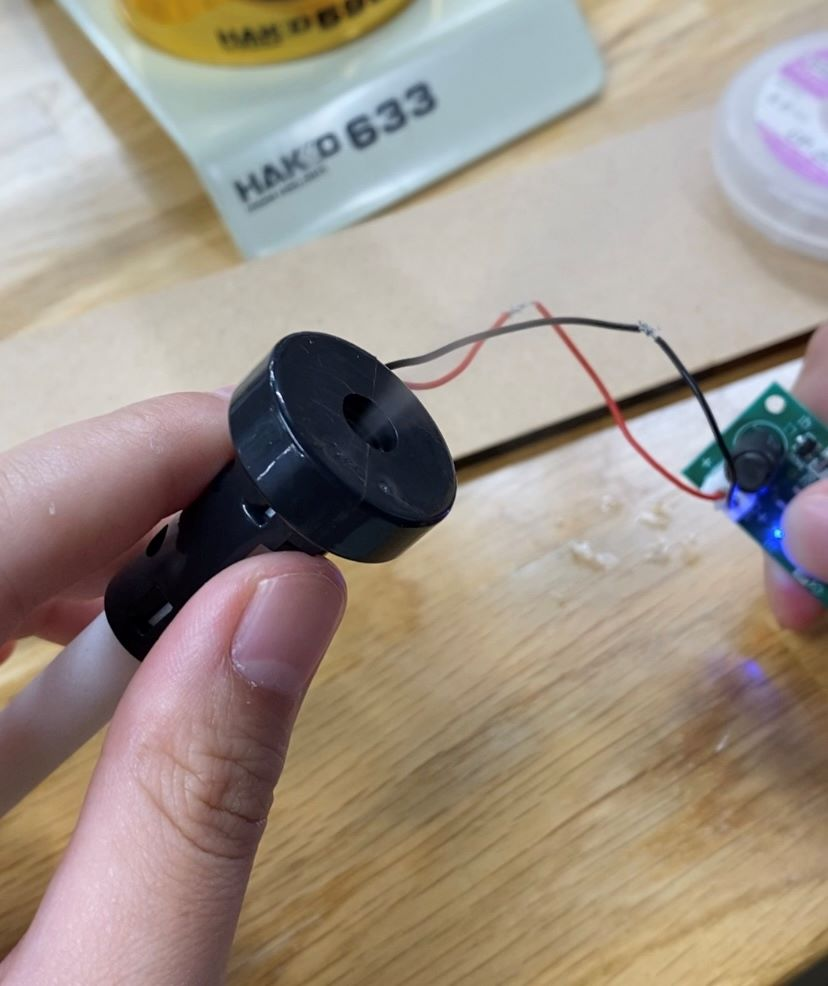

概要
日傘にミストをつける日差しを遮り暑さをしのぐだけでなく、ミストでさらに涼しくなる！
暑い夏を快適に過ごせる日傘！

■ ⇒考えること、疑問点など
● ⇒具体的なやること
▶ ⇒やったこと
■温度センサーのプログラミング
●温度センサーを使って温度を測定できるようにプログラムする
▶プログラム完成
// TMP36の出力ピンを接続したアナログピンの定義
const int sensorPin = A0;
void setup() {
// シリアル通信の初期化
Serial.begin(9600);
}
void loop() {
// アナログ入力を読み取る
int sensorValue = analogRead(sensorPin);
// 読み取った値を電圧（mV）に変換
float voltage = sensorValue * (5000.0 / 1023.0);
// 電圧を温度（摂氏）に変換
float temperatureC = (voltage - 600) / 10;
// 温度をシリアルモニタに出力
Serial.print("Temperature: ");
Serial.print(temperatureC);
Serial.println(" C");
// 1秒待機
delay(1000);
}
■温度センサーで一定の高い温度を測定したら、ミストを作動させるプログラミング
●ミストが作動するようにプログラミングする
▶リレーモジュールを使用してミスト生成機を制御した
▶プログラミング完成
// リレーの制御ピンを定義
const int relayPin = 7;
void setup() {
// リレーの制御ピンを出力モードに設定
pinMode(relayPin, OUTPUT);
// 初期状態としてリレーをオフにする
digitalWrite(relayPin, LOW);
}
void loop() {
// リレーをオンにする
digitalWrite(relayPin, HIGH);
// 5秒待つ
delay(5000);
// リレーをオフにする
digitalWrite(relayPin, LOW);
// 5秒待つ
delay(5000);
}
●温度センサーにIFのプログラミングをする
■ペットボトルの付け方
●広げたときは骨に密着するように、たたんだときはずらせるようにする
■水からミストにする
●ミストにする機械を購入する
▶ミスト生成機を購入して、動作と構造の確認

■温度センサーで温度を感知しミストを作動させるにはどうしたらいいか
●ミスト生成機と温度センサーを連動させる